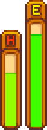

Inclui 24 tons de pele, 56 penteados, 112 camisas, 4 calças e 20 acessórios. Todas elas podem ser
usadas por ambos os gêneros, e também sendo possível escolher a aparência aleatoriamente. Ela não tem nenhum
efeito no jogo e pode ser alterada na Torre do mago e é possível incrementá-la com chapéus e calçados.

Energia e Saúde
A energia limita a produtividade. Uma das melhores maneiras de superar isso é comer alimentos.A
maioria dos cultivos e diversos itens de coleta podem ser comidos a fim de repor a energia.
É medida por uma barra ao lado da barra de Energia do jogador, no canto direito inferior da interface
do usuário. A Barra de Vida somente é visível quando o jogador está dentro da Mina ou quando não está cheia a
saúde. Do lado de fora da Mina, a única maneira de perder saúde é ser atingido pelo trem na Ferrovia, pelas
gosmas no Bosque Secreto.
Habilidades
São atributos dos jogadores que evoluem através do uso de ferramentas ou ações específicas. Para aumentar suas
habilidades, o jogador precisa realizar certas ações relacionadas àquela habilidade.Aumentar a habilidade irá
aumentar a proficiência de certas ferramentas. A experiência (XP) em cultivo é obtida ao fazer crescer
completamente seus cultivos. A XP em coleta é obtida ao coletar itens ou cortar árvores. A XP em mineração é
obtida ao quebrar rochas e depósitos de minérios. Pescar ou utilizar armadilhas covo aumentam a XP obtida em
pesca. Conforme o nível das habilidades aumentam, o jogador irá aprender a fabricar novos itens (em todos os
níveis exceto níveis 5 e 10) ou escolher profissões (nos níveis 5 e 10).
Aldeões
Os aldeões são personagens em Stardew Valley.
Dar presentes a aldeões irá aumentar seu nível de amizade. Você pode dar um presente ao selecioná-lo em seu
inventário e clicando com o botão esquerdo na pessoa cuja queira presentear. Conforme for ganhando amizade, os
aldeões irão enviar receitas de cozinha ou alimentos pelo correio, além de permitir que o jogador acesse seus
quartos e tenham diálogos diferenciados. Cenas únicas e novas interações podem ocorrer de acordo com o nível de
amizade.
Ciclo do dia
É um período de 18 horas no jogo (ou 13,5 minutos em tempo real, uma hora no jogo é de 45
segundos) das 6:00 (da manha) às 00:00 (meia-noite). Após a meia-noite, o personagem do jogador irá ficar
cansado e com a necessidade de dormir.O jogador pode ficar acordado até 2:00 da manhã, podendo
desmaiar caso passe deste horário.Se o personagem desmaiar ele será trazido para casa pelo médico da vila,
Harvey, pelo Linus, por um membro ou um médico do Mercado Joja
Inventário
O inventário consiste no conteúdo da mochila do jogador. Os espaços proporcionam ao jogador acesso imediato a
certos itens e viaja com o jogador ao redor do mapa. Este acesso é crucial no jogo. É um elemento importante do
jogo
para garantir que o inventário contenha os itens necessários para todas as tarefas em todos os momentos. Seu
limite de tamanho pode apresentar desafios no planejamento.
Seu inventário possui inicialmente 12 espaços, mas você pode atualizá-lo para um total de 36
espaços. As mochilas atualizadas estão disponíveis imediatamente no início do jogo e podem ser compradas no
Armazém do Pierre.